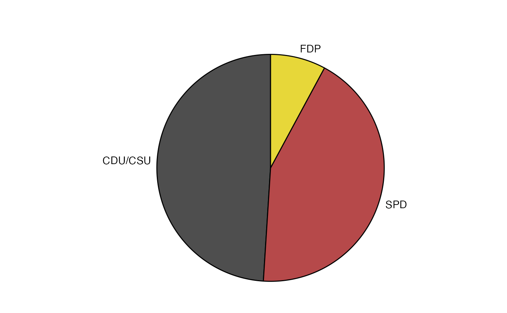

Composition of the 8th Bundestag, from 1976-1980. The party and seat columns should be self-explanatory.
The colors_original column holds the traditional colors used to represent these parties, and the colors
column holds variations of these colors that are less saturated.
bundestag
An object of class tbl_df (inherits from tbl, data.frame) with 3 rows and 4 columns.
Source: https://en.wikipedia.org/wiki/Bundestag#Distribution_of_seats_in_the_Bundestag
library(tidyverse)#>#> ✔ ggplot2 3.2.1.9000 ✔ purrr 0.3.2 #> ✔ tibble 2.1.3 ✔ dplyr 0.8.3 #> ✔ tidyr 1.0.0 ✔ stringr 1.4.0 #> ✔ readr 1.3.1 ✔ forcats 0.4.0#> Conflicts ───────────────────────────────────────────────────────── tidyverse_conflicts() ── #> ✖ dplyr::filter() masks stats::filter() #> ✖ dplyr::lag() masks stats::lag()library(cowplot)#> #>#>#>#> #>#>library(ggforce) # calculate the start and end angles for each pie bund_pie <- bundestag %>% arrange(seats) %>% mutate( seat_total = sum(seats), end_angle = 2*pi*cumsum(seats)/seat_total, # ending angle for each pie slice start_angle = lag(end_angle, default = 0), # starting angle for each pie slice mid_angle = 0.5*(start_angle + end_angle), # middle of each pie slice, for the text label hjust = ifelse(mid_angle>pi, 1, 0), vjust = ifelse(mid_angle<pi/2 | mid_angle>3*pi/2, 0, 1) ) rpie <- 1 rlabel <- 1.05 * rpie ggplot(bund_pie) + geom_arc_bar( aes( x0 = 0, y0 = 0, r0 = 0, r = rpie, start = start_angle, end = end_angle, fill = colors ) ) + geom_text( aes( x = rlabel*sin(mid_angle), y = rlabel*cos(mid_angle), label = party, hjust = hjust, vjust = vjust ) ) + coord_fixed() + scale_x_continuous(limits = c(-1.6, 1.3), name = NULL, breaks = NULL, labels = NULL) + scale_y_continuous(limits = c(-1.1, 1.3), name = NULL, breaks = NULL, labels = NULL) + scale_fill_identity() + theme_map()